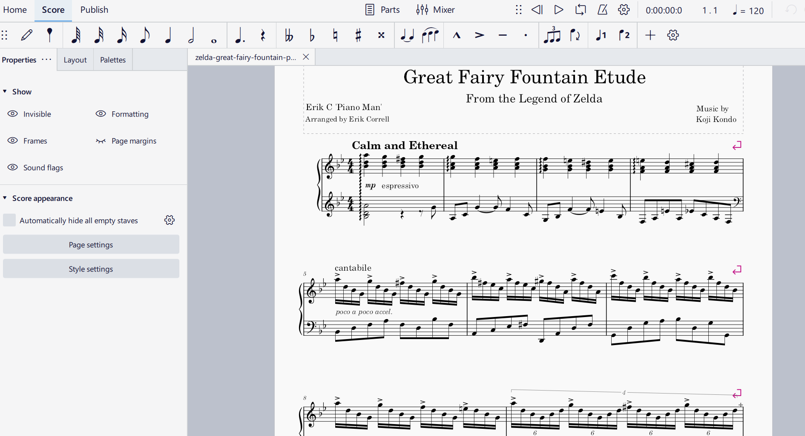
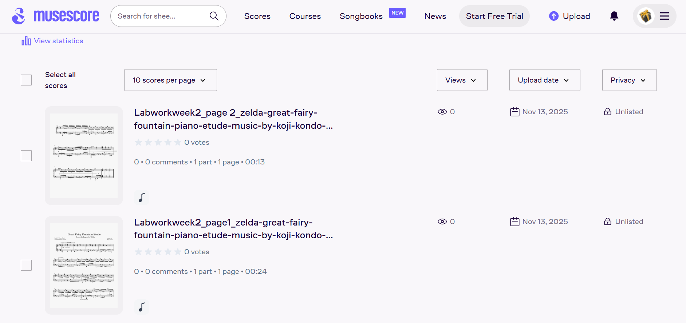

Digitisation and Editing of a Printed Score
Introduction
This week’s task focused on responsibility in music librarianship and archival practice: The digitisation of a printed score for long-term preservation and future analysis. Using my selected theme— Koji Kondo’s compositions from The Legend of Zelda—I identified an appropriate piece, processed it using Optical Music Recognition (OMR), and corrected the resulting notation in MuseScore.
1. Selection and Acquisition of the Score
For this activity, I selected the piano etude version of Great Fairy Fountain by Koji Kondo from The Legend of Zelda Series, arranged by Erik Correll 'Piano Man'.
This piece was sourced from a publicly accessible, engraved PDF transcription on Musescore. Its clear and consistent formatting made it highly suitable for OMR processing. For this activity, I focused specifically on transcribing and correcting bars 1–17 of the score.
Below is the original piano performance of the piece by Eric C:
2. Digitisation Using Audiveris (OMR)
The engraved PDF score was imported into Audiveris, an Optical Music Recognition (OMR) tool that automatically analyses printed notation and attempts to convert it into an editable digital format. This process produced an initial draft of the transcription, which served as the basis for subsequent corrections in MuseScore.
2.1 Accuracy of OMR Output
Audiveris successfully recognised several core structural elements of the score, including:
- Overall staff and system layout
- Clefs and initial time signatures
- A substantial portion of the pitch material
- Barline positions and basic measure divisions


Despite this, a number of transcription errors occurred, reflecting common limitations of current OMR technology:
- Dotted rhythms were frequently misinterpreted, often read as undotted values or inaccurately rendered as tied notes.
- Rests were inconsistently detected, resulting in both missing and extraneous rests within several measures.
- Slurs and ties failed to register reliably, disrupting intended phrasing and note sustain.
- Accidentals were occasionally omitted or incorrectly applied.
- Beat distribution was sometimes inaccurate, producing measures with incorrect total durations.
These inaccuracies required detailed manual correction to ensure that the digital transcription faithfully reflected the intended musical content.
3. Editing and Correcting the Score in MuseScore
The OMR output was exported as a MusicXML file and opened in MuseScore for systematic correction. MuseScore provided an effective environment for editing notation, offering both detailed visual inspection and auditory verification through its playback features. This stage was essential for resolving recognition errors introduced during the OMR process.
3.1 Corrections Performed
I corrected a total of 17 bars, focusing primarily on restoring accurate rhythmic and pitch information. The most significant corrections included:
- Re-entering notes whose pitch or duration had been incorrectly recognised by the OMR engine.
- Repairing measures with incorrect beat totals to conform to the intended time signature.
- Reinstating missing rests and removing incorrectly inserted ones to maintain metric accuracy.
- Restoring slurs, ties, and basic dynamic markings omitted during the OMR conversion.
- Clarifying phrase structure and ensuring consistent articulation throughout the edited measures.
3.2 Observations on MuseScore Functionality
Strengths:
- The note-input system was intuitive and efficient for re-entering or adjusting musical material.
- The playback feature allowed precise checking of corrected rhythms, pitches, and phrasing.
- MuseScore’s interface supported detailed adjustments to slurs, ties, articulation marks, and dynamics.
- Zoom, selection, and navigation tools made it easy to inspect notation at a granular level.
Challenges:
- Measures heavily distorted by OMR errors sometimes required deleting and reconstructing entire bars.
- Certain MusicXML elements are imported inconsistently, resulting in additional manual clean-up.
- Re-aligning ties, slurs, and phrase markings occasionally required multiple steps to maintain accuracy.
3.3 Final Outcome:
These images show the final output of my digitised transcription, illustrating the corrected notation produced after editing the OMR results in MuseScore.


4. Reflection
This digitisation exercise highlighted the complex relationship between automated recognition tools and the essential role of human editorial intervention in preserving musical materials. Although Audiveris OMR provided an efficient starting point by rapidly converting the printed score into a digital format, the inaccuracies in its output demonstrated the current limitations of OMR technology—particularly when dealing with nuanced rhythmic structures, expressive markings, or more intricate engraving.
The subsequent correction process in MuseScore underscored the need for detailed manual review. Editing the score required both technical precision and interpretive judgement, revealing how musical information—pitch, rhythm, articulation, and phrasing—is intricately encoded in digital notation. This task deepened my understanding of the fragility of automated transcription workflows. It emphasised the importance of accurate digital representation for long-term preservation, scholarly analysis, and future accessibility within archival contexts.
4.1 Access to files
The final corrected MuseScore file for this digitisation task is available through two access points. You can view and download the score directly from my GitHub MCA repository, where it is stored in the 'tasks' folder as part of my project’s archival materials. Additionally, an online published version is provided via MuseScore for both Page 1 and Page 2for quick access. These links ensure that the file remains easily accessible for review.
